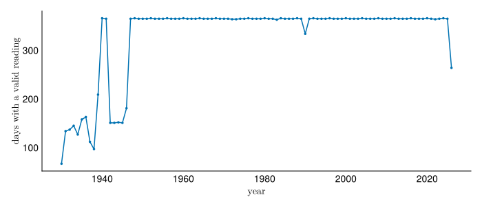
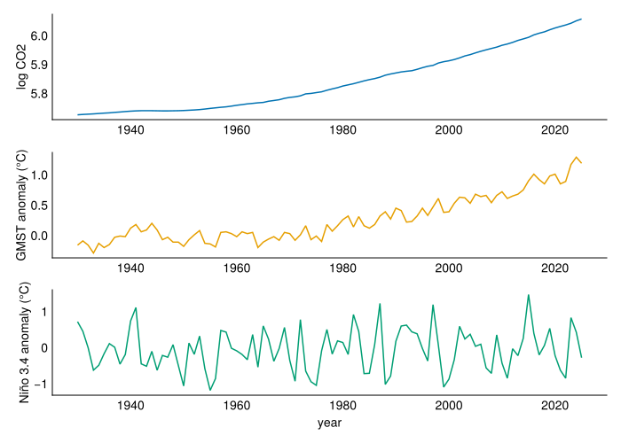
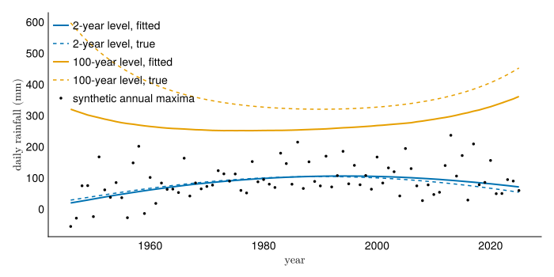

using Pkg
here = dirname(@__FILE__)
Pkg.activate(here)
Pkg.instantiate()
using CEVE543Utils
using CairoMakie, CSV, DataFrames, Dates, Distributions, LaTeXStrings
using Printf, Random, Statistics
using FlexiChains: summarystats
rng = MersenneTwister(543)
set_theme!(theme_minimal(); fontsize=14)
colors = Makie.wong_colors()Lab 6: Is extreme rainfall at Hobby changing?
In this lab, you will build your own nonstationary model of extreme daily rainfall at Houston Hobby Airport and decide whether the evidence supports a published claim that it is rising. Everyone uses the same record, and each of you makes different choices along the way. On Wednesday, October 7, you will present your results in class and defend those choices, as practice for the oral exam.
Objectives
By the end of this lab, you will be able to:
- Build a nonstationary extreme value model, choosing annual maxima or peaks over threshold, a covariate, and the form of the trend.
- Report a change in the 100-year rainfall with an interval, and say what the interval leaves out.
- Defend each choice behind your result.
Setup
First, load the packages.
Rainfall data
You will analyze daily precipitation at Houston Hobby Airport, station USW00012918 in NOAA’s Global Historical Climatology Network, which is the record from Monday’s lectures. The file hobby-daily.csv has one row for each day with a valid reading, with the rainfall in the column prcp_mm, in millimeters.
Figure 1 plots every wet day.
daily = CSV.read(joinpath(here, "hobby-daily.csv"), DataFrame)
daily.year = year.(daily.date)
wet = filter(r -> r.prcp_mm > 0, daily)
fig = Figure(; size=(700, 300))
ax = Axis(fig[1, 1]; xlabel=L"\text{date}", ylabel=L"\text{daily rainfall (mm)}")
scatter!(ax, wet.date, wet.prcp_mm; color=colors[1], markersize=3)
fig
Not every year is complete. Figure 2 counts the days with a valid reading in each year.

Many years are missing days, and 2026 is not over yet, so you need to decide how to handle the gaps. Assume the data are missing at random: whether a day was recorded has nothing to do with how much rain fell. To see when this might fail, picture a rain gauge that breaks in the heaviest storms. A simple approach is to keep only the years with at least some number of valid days, such as 350. You are welcome to try other cutoffs or other ways to filter.
Covariates
You have three candidate covariates in covariates.csv, one row per year from 1880 to 2025:
| Column | What it is | Source |
|---|---|---|
log_CO2 |
Natural log of annual mean atmospheric CO2, in parts per million | Before 1959, the Law Dome ice core record (Etheridge et al., 1996; MacFarling Meure et al., 2006); from 1959, the Mauna Loa annual means from NOAA’s Global Monitoring Laboratory |
gmst |
Global mean surface temperature anomaly, in °C relative to 1951-1980 | NASA’s GISTEMP version 4, January to December mean |
nino34 |
Sea surface temperature anomaly in the Niño 3.4 region of the tropical Pacific, in °C relative to 1981-2010 | HadISST, from NOAA’s Physical Sciences Laboratory, mean of the 12 calendar months |
CO2 and global temperature both rise over the record, so they are candidates for a long-term trend. Niño 3.4 measures the El Niño-Southern Oscillation, which shifts from year to year with no long-term trend, so it is a candidate for explaining which years are wet.
covariates = filter(r -> r.year >= 1930, CSV.read(joinpath(here, "covariates.csv"), DataFrame))
fig = Figure(; size=(700, 500))
for (k, (col, label)) in enumerate(((:log_CO2, "log CO2"), (:gmst, "GMST anomaly (°C)"), (:nino34, "Niño 3.4 anomaly (°C)")))
lines!(Axis(fig[k, 1]; ylabel=label, xlabel=k == 3 ? "year" : ""), covariates.year, covariates[!, col]; color=colors[k])
end
fig
Your challenge
Fagnant et al. (2020) analyzed more than 600 rain gauges in southeast Texas and reported that the 100-year daily rainfall at Hobby rose by 1.93 mm per year (95% interval 1.50 to 2.35). In this lab, you will analyze the same station, choose your own rule for which years to keep, and fit your own model. Their rule for keeping years differs from yours, so your answer need not match theirs. You will choose whether to fit a GEV to annual maxima or a GPD to peaks over threshold, which covariates to use and how each parameter depends on them, and which priors to include.
Prepare a 5-10 minute slide presentation for class on Wednesday, October 7, that leads with your results and then explains your modeling choices. Upload your slides to the Canvas page for the Lab 6 presentations before class on Wednesday. Answer these four key questions.
- What is your best estimate for the 10- and 100-year return levels in 2026?
- How uncertain are these estimates?
- How have these return levels changed over the past 40 years?
- How will these return levels change over the next 40 years, and what assumptions do you make in projecting these?
Explain each key decision below, saying what you chose and why.
- Did you fit a GEV to annual maxima or a GPD to peaks over threshold? If you fit a GEV, how did you handle years with missing data? If you fit a GPD, how did you decluster, and how did you choose the threshold?
- How did you decide between a stationary and a nonstationary model? If nonstationary, how did you choose the covariates and the functional form? If stationary, what gave you confidence in that choice?
- How did you estimate your uncertainty? If you used a Bayesian fit, how did you choose the priors? If you used a bootstrap, how did you choose how to resample?
Examples
You make more of the choices in this lab than in any earlier one. Two worked examples on synthetic (simulated) data give you all the code you need. Keep this section as a reference while you work; you may delete all of it, both the GEV and the GPD examples, from the notebook you turn in.
GEV example
In the first example, you fit a GEV with a quadratic trend in the location and the log scale. A quadratic is a poor choice for a real record, for the reasons under Other functional forms, but it uses every keyword you will need.
\[ y_t \sim \text{GEV}\left(\alpha_0 + \alpha_1 x_t + \alpha_2 x_t^2, \; \exp(\beta_0 + \beta_1 x_t + \beta_2 x_t^2), \; \xi\right). \]
The covariate is the year centered on 1985, \(x_t = t - 1985\). The synthetic dataset has one annual maximum for each year from 1946 to 2025. In 1985 its location rises by 0.5 mm per year and its scale shrinks by 0.5% per year; by 1990 both trends have reversed.
The gevfitbayes function from the CEVE543Utils package fits a GEV whose location and log scale are each a linear combination of the covariates you pass. Passing \(x_t\) and \(x_t^2\) as two covariates gives the quadratic above:
┌ Warning: failed to find valid initial parameters in 10 tries; consider providing a different initialisation strategy with the `initial_params` keyword └ @ Turing.Inference ~/.julia/packages/Turing/4sXd9/src/mcmc/abstractmcmc.jl:63 ┌ Warning: failed to find valid initial parameters in 10 tries; consider providing a different initialisation strategy with the `initial_params` keyword └ @ Turing.Inference ~/.julia/packages/Turing/4sXd9/src/mcmc/abstractmcmc.jl:63 ┌ Warning: failed to find valid initial parameters in 10 tries; consider providing a different initialisation strategy with the `initial_params` keyword └ @ Turing.Inference ~/.julia/packages/Turing/4sXd9/src/mcmc/abstractmcmc.jl:63 ┌ Warning: the tail effective sample size is 24% of the draws, below 25%, so the draws are far from independent. Keep every 5th draw with `thin(fit, 5)`, or sample again with `thinning=5` to keep `n_samples` draws per chain; if the share stays low the chains may be stuck, so try `sampler=:demczs`. └ @ CEVE543Utils ~/.julia/packages/CEVE543Utils/wB1FE/src/fitting.jl:351
7×10 DataFrame
| Row | param | mean | std | mcse | ess_bulk | ess_tail | rhat | q5 | q50 | q95 |
|---|---|---|---|---|---|---|---|---|---|---|
| VarName… | Float64 | Float64 | Float64 | Float64 | Float64 | Float64 | Float64 | Float64 | Float64 | |
| 1 | β_location[1] | 67.0963 | 5.84589 | 0.204974 | 815.438 | 1446.22 | 1.00152 | 57.4133 | 66.9317 | 76.7413 |
| 2 | β_location[2] | 16.5278 | 6.09354 | 0.199623 | 935.086 | 1294.99 | 1.00338 | 6.21113 | 16.5231 | 26.6017 |
| 3 | β_location[3] | -21.3601 | 6.01303 | 0.203295 | 875.332 | 1616.49 | 1.00526 | -31.1275 | -21.4385 | -11.4268 |
| 4 | β_logscale[1] | 3.74746 | 0.100699 | 0.00346467 | 848.234 | 1225.67 | 1.00099 | 3.58602 | 3.74687 | 3.91614 |
| 5 | β_logscale[2] | -0.0231233 | 0.0968261 | 0.00340747 | 806.303 | 1245.12 | 1.00256 | -0.180694 | -0.0257387 | 0.139678 |
| 6 | β_logscale[3] | 0.205127 | 0.109836 | 0.00413586 | 707.9 | 1207.26 | 1.00459 | 0.0274186 | 0.201457 | 0.392385 |
| 7 | β_shape[1] | 0.0289429 | 0.110946 | 0.0039076 | 822.978 | 964.21 | 1.00108 | -0.145494 | 0.0235015 | 0.218836 |
locationcov and logscalecov each take a list of covariates, so [x, x .^ 2] is two of them. rng is the random number generator from the setup cell, and progress=false hides the progress bar.
By default, priors in gevfitbayes are flat on every coefficient and uniform between \(-0.5\) and \(0.5\) on \(\xi\). The posterior is sampled with DE-MCzs, the sampler in the RMC-BestFit software that Smith et al. (2026) use. Pass sampler=NUTS() to use the NUTS sampler instead.
The summarystats table is for checking the chains. Check the rhat column, which should be close to 1, and the ess_bulk column, which should be in the hundreds or more, as in lab 5. DE-MCzs takes no gradient steps, so it has no divergences to count. Before sampling, the fit centers each covariate and divides it by its standard deviation, so a slope in that table is a change per standard deviation of the covariate.
params gives the coefficients in the units of the covariate: a matrix for each of β_location, β_logscale, and β_shape, with one row per posterior draw and one column per coefficient. The first column is the intercept, which is the value at the means of the covariates rather than at \(x_t = 0\). The second column is \(\alpha_1\), the slope per year in 1985, and the third is \(\alpha_2\).
α1: median 0.71 mm per year [0.19, 1.22]; the true value is 0.5returnlevel computes return levels at any covariate value you pass, giving one row per posterior draw and one column per value. Here the values are the years you want minus 1985, and their squares. So rl100[:, 1] is the 100-year level in 1986, rl100[:, 2] in 2026, and rl100[:, 3] in 2066, with one entry per draw. The cell also defines interval, which rounds the 2.5%, 50%, and 97.5% quantiles of the draws to whole millimeters: a 95% interval with the median in the middle. Each println line reports the 100-year level; to report the 10-year level, use rl10 in place of rl100.
report_years = [1986, 2026, 2066]
x_report = report_years .- 1985
rl10 = returnlevel(gev_syn, 10; locationcov=[x_report, x_report .^ 2], logscalecov=[x_report, x_report .^ 2])
rl100 = returnlevel(gev_syn, 100; locationcov=[x_report, x_report .^ 2], logscalecov=[x_report, x_report .^ 2])
interval(v) = round.(quantile(v, [0.025, 0.5, 0.975]))
println("100-year level in 2026 (mm): ", interval(rl100[:, 2]))
println("Change, 1986 to 2026 (mm): ", interval(rl100[:, 2] .- rl100[:, 1]))
println("Change, 2026 to 2066 (mm): ", interval(rl100[:, 3] .- rl100[:, 2]))100-year level in 2026 (mm): [202.0, 369.0, 852.0]
Change, 1986 to 2026 (mm): [-79.0, 107.0, 566.0]
Change, 2026 to 2066 (mm): [-221.0, 1895.0, 53377.0]The projection to 2066 assumes the quadratic keeps going for another 40 years, past the end of the data. With log CO2 or GMST as the covariate, you also have to choose a value for that covariate in 2066, and say what it is and why.
Figure 4 plots the fitted 2- and 100-year levels in each year of the record next to the true levels the synthetic data came from. With no covariates passed, returnlevel evaluates at each year in the record.
fig = Figure(; size=(700, 350))
ax = Axis(fig[1, 1]; xlabel=L"\text{year}", ylabel=L"\text{daily rainfall (mm)}")
for (k, T) in enumerate([2, 100])
rl_fit = returnlevel(gev_syn, T)
rl_true = returnlevel.(GeneralizedExtremeValue.(μ_true, σ_true, 0.15), T)
lines!(ax, years, median.(eachcol(rl_fit)); color=colors[k], linewidth=2, label="$T-year level, fitted")
lines!(ax, years, rl_true; color=colors[k], linestyle=:dash, label="$T-year level, true")
end
scatter!(ax, years, y_syn; color=:black, markersize=5, label="synthetic annual maxima")
axislegend(ax; position=:lt)
fig
You can also fit by maximum likelihood and get an interval from a bootstrap. gevfit fits the same model by maximum likelihood, and getdistribution gives the fitted GEV for each year. A parametric bootstrap draws a new record from those distributions, refits it, and records its return levels, many times over. The spread of the refitted levels is the uncertainty.
gev_mle = gevfit(y_syn; locationcov=[x, x .^ 2], logscalecov=[x, x .^ 2])
gev_by_year = getdistribution(gev_mle)
n_boot = 500
rl100_boot = zeros(n_boot, length(report_years))
for b in 1:n_boot
y_boot = rand.(rng, gev_by_year)
fit_boot = gevfit(y_boot; locationcov=[x, x .^ 2], logscalecov=[x, x .^ 2])
rl100_boot[b, :] = returnlevel(fit_boot, 100; locationcov=[x_report, x_report .^ 2], logscalecov=[x_report, x_report .^ 2])
end
println("100-year level in 2026 (mm): ", interval(rl100_boot[:, 2]))
println("Change, 1986 to 2026 (mm): ", interval(rl100_boot[:, 2] .- rl100_boot[:, 1]))
println("Change, 2026 to 2066 (mm): ", interval(rl100_boot[:, 3] .- rl100_boot[:, 2]))100-year level in 2026 (mm): [174.0, 311.0, 570.0]
Change, 1986 to 2026 (mm): [-91.0, 70.0, 303.0]
Change, 2026 to 2066 (mm): [-246.0, 977.0, 14336.0]Other functional forms
You choose the functional form: which parameters change with the covariate, and how. Every fitting function also takes a table and the names of its columns. For example, gevfitbayes(annmax, :y; locationcovid=[:log_CO2], logscalecovid=[:log_CO2]) fits the column y of the table annmax, with the location and the log scale each a line in log_CO2. You build annmax under Your Hobby analysis below. With this table form, each functional form is a choice of covariate columns:
- For a trend in the location alone, pass
locationcovidand leave outlogscalecovid. - For a trend in the scale alone, pass
logscalecovidand leave outlocationcovid. - Leave out both to fit a stationary model.
- For a curved trend, add a column holding the covariate squared to your table, such as
annmax.log_CO2_sq = annmax.log_CO2 .^ 2, and name it inlocationcovid. A quadratic will find some curvature in almost any record, including one drawn from a straight line. Outside the data it grows without limit, so its 2066 level depends on a curvature the record barely pins down. - For an abrupt change at a year you choose, add a column that is 0 before that year and 1 after it. Say why that year, and whether you chose it before or after looking at the data.
Prior information
You change the priors with two keywords. trend_priors puts a prior on the slopes, one for each parameter, and any you leave out stay flat. The slope priors are on the standardized scale of the summarystats table, so each is a change per standard deviation of the covariate. A location slope is in millimeters, so trend_priors=(location=Normal(0, 5),) says the location probably moves less than about 10 mm per standard deviation. The trailing comma makes it a named tuple with one entry. A logscale slope is a proportional change in the scale, so logscale=Normal(0, 0.1) says the scale probably changes by less than about 20% per standard deviation. quantile_priors states what you believe about return levels, as in lab 4. Each belief gives the position of a year in the record (index=1 is the first year), a return period, and a distribution for that return level in that year. You can give as many as you like. The two beliefs below are hypothetical, made up to suit the synthetic record. For Hobby, base a belief on a source you can name, and say what it is.
beliefs = [
(index=1, period=100, belief=Normal(250, 40)),
(index=lastindex(y_syn), period=100, belief=Normal(450, 40)),
]
gev_beliefs = gevfitbayes(y_syn; locationcov=[x, x .^ 2], logscalecov=[x, x .^ 2], quantile_priors=beliefs, rng=rng, progress=false)
rl100_beliefs = returnlevel(gev_beliefs, 100; locationcov=[x_report, x_report .^ 2], logscalecov=[x_report, x_report .^ 2])
@printf("2026 100-year level: median %.0f mm without beliefs, %.0f mm with them\n", median(rl100[:, 2]), median(rl100_beliefs[:, 2]))┌ Warning: failed to find valid initial parameters in 10 tries; consider providing a different initialisation strategy with the `initial_params` keyword └ @ Turing.Inference ~/.julia/packages/Turing/4sXd9/src/mcmc/abstractmcmc.jl:63 ┌ Warning: failed to find valid initial parameters in 10 tries; consider providing a different initialisation strategy with the `initial_params` keyword └ @ Turing.Inference ~/.julia/packages/Turing/4sXd9/src/mcmc/abstractmcmc.jl:63 2026 100-year level: median 369 mm without beliefs, 442 mm with them
GPD example
In the second example, you fit a GPD with a trend in the log scale, using the same centered year as the covariate. The synthetic storm record has 12 storms a year above a threshold of 25.4 mm, and the scale of each storm’s excess grows by 0.4% per year.
gpfitbayes takes the peaks and the threshold \(u\) and fits a GPD to the excesses. Its log scale is a straight line in the covariate, where \(x_i\) is the year of storm \(i\) minus 1985:
\[ y_i - u \sim \text{GPD}\left(\exp(\beta_0 + \beta_1 x_i), \; \xi\right). \]
3×10 DataFrame
| Row | param | mean | std | mcse | ess_bulk | ess_tail | rhat | q5 | q50 | q95 |
|---|---|---|---|---|---|---|---|---|---|---|
| VarName… | Float64 | Float64 | Float64 | Float64 | Float64 | Float64 | Float64 | Float64 | Float64 | |
| 1 | β_logscale[1] | 3.03393 | 0.0491283 | 0.000949048 | 2684.82 | 3362.16 | 0.999814 | 2.95298 | 3.03465 | 3.11506 |
| 2 | β_logscale[2] | 0.12723 | 0.036788 | 0.000703159 | 2739.94 | 3375.66 | 0.999879 | 0.067518 | 0.125911 | 0.187222 |
| 3 | β_shape[1] | 0.140575 | 0.0383701 | 0.000795451 | 2340.34 | 3021.72 | 1.00033 | 0.0797338 | 0.139521 | 0.206701 |
A GPD has no location parameter to trend, so you pass only logscalecov. A GPD return level also needs rate, the average number of storms per year above the threshold, which is 12 here. gpfit and gpfitbayes treat rate as one known number: they do not allow a trend in how often storms exceed the threshold, and their return-level intervals leave out the uncertainty in rate. If you want to model either, write the model in Turing directly.
100-year level in 2026 (mm): [266.0, 339.0, 457.0]
Change, 1986 to 2026 (mm): [25.0, 61.0, 116.0]With 960 storms in place of 80 annual maxima, the intervals are narrower.
Your Hobby analysis
Now use the code in the examples to answer the key questions above. If you fit a GEV, this cell makes a table of annual maxima joined to the covariates:
If you fit a GPD, this cell finds the peaks over a threshold and joins each peak’s year to the covariates. The threshold of 25.4 mm and the 72-hour gap between storms are made up to show the code; choose your own and defend them, as in lab 5. decluster keeps the largest day in each storm, and rate is the number of peaks per year you kept, which you pass to returnlevel.
Fit the peaks with the table form, such as gpfitbayes(peaks, :prcp_mm, u; logscalecovid=[:log_CO2], rng=rng, progress=false).
Turning it in
This lab is due on Canvas on Friday, October 9, one week after the Friday session that starts it.
Check that your notebook answers each key question and explains each key decision.
Render the notebook to a PDF. In the terminal, from the lab folder, run:
This writes
index.pdfbeside the notebook. It runs the whole notebook from the top in a fresh process, so it also confirms your work does not depend on leftover REPL state.Commit and push your work, with GitHub Desktop or by asking Claude to commit and push.
Upload
index.pdfto the Lab 6 assignment on Canvas.Paste the link to your repository in the same Canvas submission.
If the render fails and you cannot fix it, upload what you have and say where it broke. A lab that does not render is worth more to me than a lab you did not turn in.
Note what broke, what Claude got wrong, and what you had to fix by hand, and bring it to the next session.
References
Etheridge, D. M., Steele, L. P., Langenfelds, R. L., Francey, R. J., Barnola, J. ‐M., & Morgan, V. I. (1996). Natural and anthropogenic changes in atmospheric CO2 over the last 1000 years from air in Antarctic ice and firn. Journal of Geophysical Research: Atmospheres, 101(D2), 4115–4128. https://doi.org/10.1029/95jd03410
Fagnant, C., Gori, A., Sebastian, A., Bedient, P. B., & Ensor, K. B. (2020). Characterizing spatiotemporal trends in extreme precipitation in Southeast Texas. Natural Hazards, 104(2), 1597–1621. https://doi.org/10.1007/s11069-020-04235-x
MacFarling Meure, C., Etheridge, D., Trudinger, C., Steele, P., Langenfelds, R., van Ommen, T., et al. (2006). Law dome CO 2, CH4 and N2O ice core records extended to 2000 years BP. Geophysical Research Letters, 33(14). https://doi.org/10.1029/2006gl026152
Smith, C. H., Skahill, B., & Margo, D. A. (2026). Nonstationary Flood Frequency Analysis for Urban Watersheds Using Open-Source Bayesian Software: Contrasting Case Studies from Texas. Water, 18(5), 636. https://doi.org/10.3390/w18050636